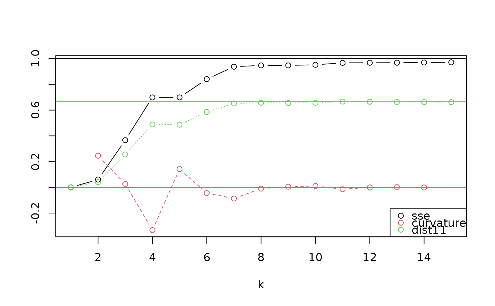

This function compares multiple potential values for k, the number of clusters in to use in ps_regions(),
to help you decide how well different numbers of regions fit your data set. For each value of k, it performs
a cluster analysis and calculates the proportion of total variance explained (SSE, the sum of squared pairwise
distances explained). It also calculates second-order metrics of the relationship between k and SSE. While
many data sets have no optimal value of k and the choice is often highly subjective, these evaluation metrics
can help you identify potential points where the variance explained stops increasing quickly as k increases.
Arguments
- ps
A
phylospatialobject. Must contain adissimcomponent generated by ps_add_dissim.- k
Vector of positive integers giving possible values for
k. Values greater than the number of sites in the data set will be ignored.- plot
Logical indicating whether to print a plot of the results (
TRUE, the default) or return a data frame of the results (FALSE).- ...
Further arguments passed to ps_regions.
Value
The function generates a data frame with the following columns. If plot = FALSE the data frame is
returned, otherwise the function prints a plot of the latter variables as a function of k:
"k": The number of clusters.
"sse": The proportion of total variance explained, with variance defined as squared pairwise community phylogenetic dissimilarity between sites.
"curvature": The local second derivative. Lower (more negative) values indicate more attractive break-point values of k.
"dist11": The distance from the point to the 1:1 line on a plot of
kvsssein which k values over the interval from 1 to the number of sites are rescaled to the unit interval. Higher values indicate more attractive values for k.
Examples
ps <- ps_add_dissim(ps_simulate())
ps_regions_eval(ps, k = 1:15, plot = TRUE)
